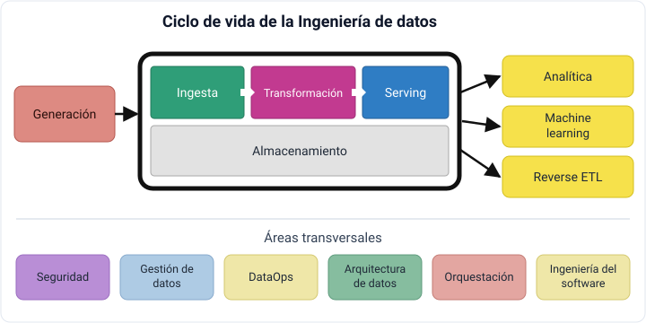
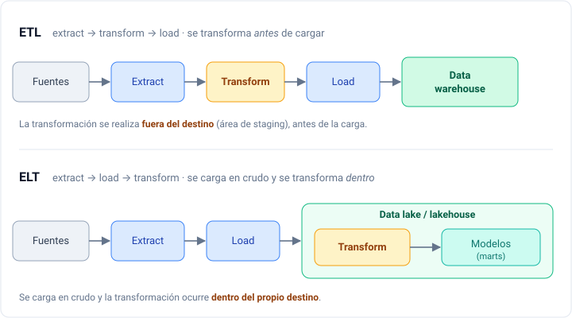
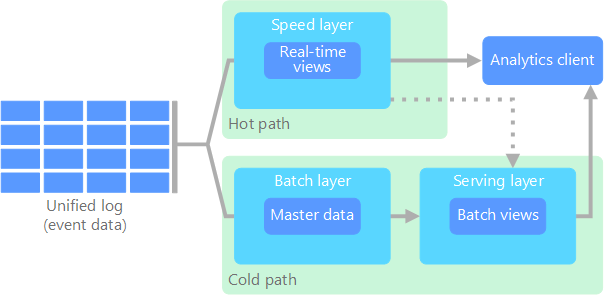
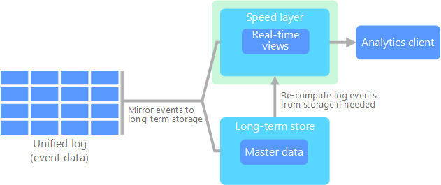

Ciclo de vida del dato
Simplificando
Esta sesión aglutina y simplifica los conceptos que están más profundamente detallados en las sesiones sobre:
- Big Data: data warehouse, data lake, data lakehouse.
- Ingeniería de datos: definición, roles y ciclo de vida del dato.
- Arquitecturas Big Data: arquitecturas Lambda y Kappa.
Changelog:
- Nueva creación — Julio 2026
Todo modelo de IA que hayas usado —un chatbot, un generador de imágenes, un traductor— se sostiene sobre datos que alguien tuvo que generar, mover, almacenar y limpiar. Esa fontanería invisible es la ingeniería de datos, la cual construye la base para la ciencia de datos, la analítica y los modelos de IA en producción.
Antes del Big Data ya había ingeniería de datos, entendida como las operaciones necesarias para permitir el acceso a los flujos de información mediante procesos ETL, pero con el auge del Big Data y la ingente cantidad de herramientas disponibles su importancia se ha multiplicado.
La ingeniería de datos trata del movimiento, manipulación y gestión de los datos. Si buscamos una definición más completa, podemos decir que se centra en el desarrollo, implementación y mantenimiento de los sistemas y procesos que recuperan los datos en crudo y producen información consistente y de alta calidad que da soporte a los diferentes casos de uso, como pueden ser la analítica de datos o el machine learning.
El encargado de gestionar su ciclo de vida es el ingeniero de datos, recuperando los datos desde los sistemas origen y sirviéndolos a los futuros consumidores, ya sean científicos de datos, herramientas de visualización o modelos de IA.
¿Ha pasado la época del Big Data?
Podríamos aventurarnos a decir que la época del Big Data ya ha pasado, ya que el avance de las tecnologías ha simplificado el uso de grandes volúmenes de datos, con lo que ya no necesitamos distinguir entre small y big data. Al fin y al cabo son datos, y toda empresa se centra en resolver sus problemas con ellos y obtener el mayor valor, independientemente de su tamaño. Los antiguos ingenieros de Big Data ahora son, simplemente, ingenieros de datos.
Roles¶
Los ingenieros de datos trabajan con plataformas de datos como Spark / Databricks o Snowflake (antiguamente todo se basaba en el ecosistema Hadoop), bases de datos relacionales, NoSQL y sistemas OLAP.
Además, ser ingeniero de datos implica tener destrezas en el modelado de datos, la integración, la transformación, y la calidad y gobernanza del dato. El objetivo es ofrecer una infraestructura de datos eficiente y confiable que dé soporte a la toma de decisiones.
Junto al ingeniero de datos "generalista", conviene distinguir algunos roles más específicos:
- Analytics engineer: perfil que ha ganado muchísima relevancia en los últimos años. Se sitúa entre el ingeniero de datos y el analista: no monta la infraestructura, sino que transforma los datos ya cargados en modelos limpios, documentados y testeados listos para el análisis, principalmente con SQL y dbt. Es el rol que da forma a la capa de transformación (la T de ELT).
- Pipeline data engineer: encargado de trabajar con el flujo de datos, con conocimiento de Python, SQL y Spark, así como de lagos de datos o data lakehouse.
- Product data engineer: encargado de instalar, configurar y mantener los productos del equipo, como pueden ser Airflow, Kafka o Spark.
- BI data engineer: mediante el uso de SQL y herramientas de visualización como Power BI o Tableau para mostrar analíticas.
Ingeniero de datos vs científico de datos
La relación entre un ingeniero de datos y un científico es que el primero le deja los datos preparados al segundo, obteniéndolos y dándoles valor para que el científico realice la analítica y la ciencia de datos. El ingeniero de datos es el perfil más técnico y con el que mejor encaja nuestro alumnado de FP.
El ciclo de vida del dato¶
El ciclo de vida del dato se centra en los objetivos que debe cumplir, dejando de lado las tecnologías necesarias. A muy alto nivel se puede resumir en tres fases:
- Generación: quién, dónde, cómo y cuándo se crean los datos, ya sean analógicos o digitales: ficheros en diferentes formatos, APIs, bases de datos OLTP, sistemas OLAP, logs, sensores, etc.
- Almacenamiento, sobre el que se apoyan las fases de ingesta, transformación y serving.
- Consumo: analítica, machine learning y reverse ETL.

Generación¶
Los datos nacen en fuentes muy diversas: bases de datos transaccionales (OLTP) como el retail_db que usaremos durante el curso, APIs REST, streams de eventos, logs de aplicaciones o sensores IoT (como los de nuestro proyecto de colmenas). Cada fuente impone su formato, su frecuencia y su volumen, y condiciona el resto del ciclo.
Almacenamiento¶
El almacenamiento es la fase sobre la que se apoyan la ingesta, la transformación y el serving: es donde los datos residen, ya sea en crudo o ya procesados. Aquí es también donde elegimos la abstracción de almacenamiento que usaremos —data warehouse, data lake o data lakehouse—. Como esa elección condiciona el resto de la arquitectura, la desarrollamos en el apartado Del data warehouse al data lakehouse.
Sobre el almacenamiento se realizan las fases de ingesta, transformación y serving.
Ingesta¶
La ingesta implica mover los datos desde una fuente u origen hasta el almacenamiento. Aunque la estudiaremos en detalle en la sesión de ingesta de datos, conviene citar los conceptos de pipeline de datos, las estrategias push / pull / poll, la ingesta por ventanas temporales o por cantidad, mediante snapshots o de forma incremental, y la diferencia entre ETL y ELT (que veremos a continuación).
Transformación¶
Es donde se introduce la lógica de negocio. Podemos desglosarla en:
- Consultas, siendo muy importante saber leer el plan de ejecución y cómo funciona el optimizador de cada motor. Como recomendaciones: evitar joins innecesarios, utilizar CTE en lugar de subconsultas, y evitar los full scan filtrando filas y columnas.
- Modelado de datos, mediante modelos conceptuales, lógicos y físicos, y la normalización o denormalización de las tablas. Conviene conocer el modelado multidimensional, ya sea la técnica de Kimball (modelos en estrella con una tabla de hechos y varias de dimensiones) o Data Vault.
- Transformaciones propiamente dichas, que unen consultas y modelos para generar valor. Podemos emplear herramientas basadas en SQL (como dbt o Spark SQL) o en código (Pandas, PySpark).
Serving¶
Finalmente, los datos se entregan para analítica, ML, etc., es decir, para cumplir los objetivos para los que se creó el sistema. Es muy importante realizar una validación de los datos antes de servirlos, para dotar de confianza a sus consumidores. Los casos de uso más habituales son la analítica de datos (de negocio, operacional o embebida), el machine learning y el reverse ETL (volver a cargar los datos transformados en la fuente de origen).
Garbage in, garbage out
Si los datos que alimentan un entrenamiento de ML son malos, el modelo será malo. La elección de las características de entrada a un modelo debe seguir todas las fases del ciclo de vida del dato. Este principio será el hilo conductor de la sesión de calidad del dato.
ETL vs ELT¶
Los procesos ETL (extract, transform, load) extraen los datos de las fuentes, los limpian y transforman, y solo entonces los cargan en el destino (normalmente un data warehouse). Es el enfoque clásico: los datos no están disponibles hasta que se han transformado.
Con la llegada del almacenamiento barato y escalable y de los motores que transforman in situ, el mercado se ha movido hacia ELT (extract, load, transform): primero se cargan los datos en crudo en el lago o lakehouse y la transformación se realiza después, ya dentro del propio sistema de destino.

¿Por qué ELT gana terreno?
ELT permite una mayor generalización de la información almacenada: los ingenieros de datos generan un lago con los datos en crudo y dejan que la transformación la realicen los expertos en el negocio (el analytics engineer). Además, los datos están disponibles antes, ya que no hay que esperar a un largo proceso de transformación previo a la carga. En resumen, pasamos de un desarrollo centralizado (ETL) a uno más orientado a servicios (ELT) que automatiza la carga del lago y codifica después los flujos de transformación.
En este bloque adoptaremos el enfoque ELT: cargaremos en crudo con dlt, almacenaremos sobre object storage y transformaremos con SQL y dbt.
Arquitecturas de datos¶
Una arquitectura de Big Data se diseña para manejar la ingesta, el procesamiento y el análisis de datos demasiado grandes o complejos para un sistema tradicional. En esta sesión no profundizaremos en ninguna tecnología concreta, ya que el stack de herramientas es muy amplio y en constante crecimiento; a lo largo del curso iremos conociendo cada una y aprenderemos cuándo utilizarla.
Toda arquitectura que diseñemos debería cumplir estas características:
- Escalabilidad: permite aumentar fácilmente las capacidades de procesamiento y almacenamiento.
- Tolerancia a fallos: garantiza la disponibilidad aunque fallen algunas máquinas, evitando la pérdida de datos.
- Datos distribuidos: almacenados entre diferentes máquinas, evitando el punto único de fallo (SPOF).
- Procesamiento distribuido: el tratamiento se reparte entre máquinas para mejorar los tiempos y escalar.
- Localidad del dato: los datos y los procesos que los tratan deben estar cerca, para reducir latencias de red.
Planificar para el fallo
El CTO de AWS, Werner Vogels, tiene una cita muy apropiada: "Everything fails, all the time." Por ello hemos de tener siempre en cuenta la disponibilidad y confiabilidad de los sistemas.
Del data warehouse al data lakehouse¶
Para entender las arquitecturas de almacenamiento conviene recordar la distinción entre sistemas OLTP y OLAP. Los sistemas OLTP (OnLine Transaction Processing) son las bases de datos transaccionales del día a día de una aplicación (como nuestro retail_db), optimizadas para muchas operaciones pequeñas de lectura y escritura. Los sistemas OLAP (OnLine Analytical Processing) están optimizados para consultas analíticas sobre grandes volúmenes de datos históricos. Para llevar los datos de un mundo al otro se emplean procesos ETL/ELT.
Sobre esta base, la forma de centralizar y explotar los datos ha ido evolucionando:
Data warehouse¶
Las empresas que han trabajado con datos en los últimos años normalmente centralizaban toda su analítica en un data warehouse, que integra todos los datos de los que dispone la empresa en una única base de datos OLAP, con el objetivo de aplicar inteligencia de negocio y extraer valor contrastado para la toma de decisiones basada en datos históricos.
Es fundamental tener en cuenta que un data warehouse solo admite datos estructurados y esquemas bien definidos, soportando un enfoque schema-on-write (los datos siguen un esquema predefinido antes de escribirse). Consta de cuatro componentes principales:
- Fuentes de datos: los datos a procesar y analizar, normalmente datos OLTP.
- Herramientas ETL: extraen los datos de las fuentes, los limpian y los transforman antes de cargarlos.
- El almacén en sí, que guarda los datos procesados y estructurados, en un formato optimizado para consultas OLAP.
- Herramientas de consulta: consultas, informes y aplicaciones de minería de datos para explotar la información. Como ejemplos: AWS Redshift, Snowflake o Google BigQuery.
Data lake¶
El data lake surge para superar la principal limitación del almacén: solo admite datos estructurados. Un lago permite almacenar en crudo cualquier tipo de dato (estructurado, semiestructurado o sin estructurar) siguiendo un enfoque schema-on-read (el esquema se aplica al leer, no al escribir). Históricamente se construía sobre el ecosistema Hadoop/HDFS y, cada vez más, sobre almacenamiento de objetos como S3 o MinIO.
Su flexibilidad es también su riesgo: sin gobierno, un lago puede degradar en un data swamp (pantano de datos) del que resulta difícil extraer valor.
Data lakehouse¶
El data lakehouse es la evolución que aglutina las ventajas de ambos mundos: trabaja con datos en crudo y agregados como un lago, pero añade el soporte robusto de esquemas, tablas y operaciones (transacciones ACID, modificaciones incrementales, borrado, time travel) propias de un almacén. Es la arquitectura de referencia hoy, y se materializa mediante open table formats como Delta Lake o Apache Iceberg sobre almacenamiento de objetos, o mediante plataformas como Snowflake o Databricks.
| Data warehouse | Data lake | Data lakehouse | |
|---|---|---|---|
| Tipo de dato | estructurado | cualquiera (crudo) | cualquiera (crudo + agregado) |
| Esquema | schema-on-write | schema-on-read | schema-on-read + esquema/tabla |
| Transacciones ACID | sí | no | sí |
| Coste almacenamiento | alto | bajo | bajo |
| Casos de uso | BI, informes | data science, ML | BI + ML unificados |
| Ejemplos | Redshift, Snowflake | S3/MinIO, HDFS | Delta Lake, Iceberg |
Separación de computación y almacenamiento
En los inicios del Big Data, a partir del ecosistema Hadoop, el objetivo era colocar los datos lo más cerca posible del procesamiento (localidad del dato). Hoy, en cambio, si utilizamos un lago o lakehouse, los datos residen en un lugar muy distinto de donde se procesan. El motivo es la escalabilidad, la durabilidad y la disponibilidad que ofrece el almacenamiento de objetos como S3, que además nos permite escalar cómputo y almacenamiento de forma independiente.
En este bloque trabajaremos sobre un data lakehouse abierto (MinIO + Delta Lake), que montaremos con las manos en las sesiones de object storage y Spark.
Procesamiento batch y streaming¶
Antes de ver las arquitecturas más comunes, necesitamos dos conceptos:
- Batch: proceso en el que interviene un conjunto de datos con un inicio y un fin en el tiempo (también llamado procesamiento por lotes). Es el procesamiento que se ha realizado desde los inicios del trabajo con datos, tanto en bases de datos como en data warehouses.
- Streaming: procesamiento que recibe y trata nueva información según va llegando, sin un fin temporal. Se relaciona con el análisis en tiempo real y se apoya en sistemas basados en colas de mensajes.
No todo es tiempo real
No confundas tiempo real con inmediatez. En informática, un sistema de tiempo real es aquel que responde en un periodo de tiempo finito, normalmente muy pequeño, pero no tiene por qué ser instantáneo.
Desde el punto de vista de la llegada de los datos y su procesamiento, las dos arquitecturas más comunes son Lambda y Kappa. Las estudiaremos con más detalle en el bloque de streaming; aquí nos quedamos con la idea general.
Arquitectura Lambda¶
Representada mediante la letra griega, apareció en 2012 y se atribuye a Nathan Marz. Su objetivo era montar un sistema robusto y tolerante a fallos, linealmente escalable y con lecturas y escrituras de baja latencia. Todos los datos que llegan al sistema van por dos caminos, uno lento (capa batch) y otro rápido (capa streaming), que confluyen en la capa de serving:
- Capa batch: gestiona los datos históricos de forma inmutable y recalcula los resultados sobre el conjunto completo. Máxima precisión, a coste de alta latencia.
- Capa streaming / speed: ofrece resultados con muy baja latencia mediante modificaciones incrementales, a coste de perder algo de precisión.
- Capa serving: permite consultar los resultados combinando las vistas de ambas capas.

Arquitectura Kappa¶
Introducida en 2014 por Jay Kreps en su artículo Questioning the Lambda Architecture, señala el principal inconveniente de Lambda —su complejidad, al duplicar la lógica en dos caminos— y propone que todos los datos fluyan por un único camino, eliminando la capa batch y dejando solo la de streaming. Para ello, las fuentes se sustituyen por colas de mensajes (por ejemplo, Apache Kafka), obteniendo flujos de datos accesibles en tiempo real.

¿Lambda o Kappa?
Depende. Un ejemplo real de Kappa sería un sistema de geolocalización que pinta el desplazamiento de un usuario a partir de eventos de antenas. Un caso de Lambda sería un recomendador de películas: una capa batch que entrena el modelo con el histórico completo, y una capa streaming que incorpora las valoraciones en tiempo real. Al final, la decisión suele reducirse a favorecer el rendimiento de un proceso batch frente a la simplicidad de compartir código en ambas capas.
El stack moderno de datos¶
El principal objetivo de una arquitectura de datos moderna es unificar las diferentes fuentes en un único lugar que sea la fuente veraz de nuestros datos, y hacerlo con herramientas desacopladas que podamos sustituir según la necesidad.
Rara vez una arquitectura se construye sobre una única herramienta; se combinan piezas especializadas por cada fase del ciclo de vida. Este es el mapa de las herramientas que trabajaremos en el curso, situadas sobre las fases que ya conocemos:
| Fase del ciclo de vida | Herramientas del curso |
|---|---|
| Generación | APIs, BBDD OLTP (retail_db), sensores IoT, ficheros |
| Ingesta (EL) | dlt, Kafka Connect, Debezium (CDC) |
| Almacenamiento | MinIO / S3 (object storage), Delta Lake / Iceberg (open table formats), Hive Metastore |
| Transformación | DuckDB, Spark, dbt |
| Orquestación | Apache Airflow |
| Consulta / serving | Trino, Athena, DuckDB; pgvector (IA) |
| Calidad y gobierno | dbt tests, Great Expectations |
| Consumo | Power BI, cuadernos Jupyter, modelos IA / RAG |
Informe Matt Turck (MAD Landscape)
Cada año, Matt Turck publica un informe con la amalgama de herramientas y tecnologías del escenario de Machine Learning, AI y Data, que recomendamos consultar para hacerse una idea de lo vivo que está el sector: https://mattturck.com/landscape/
A lo largo del bloque iremos rellenando este mapa con las manos: en las próximas sesiones almacenaremos datos en object storage, los consultaremos con SQL sobre el propio lago, los ingestaremos con dlt y los transformaremos con dbt.
FAQ¶
A continuación se recogen preguntas habituales sobre los conceptos de esta sesión que suelen realizarse en entrevistas de trabajo para puestos de ingeniería o ciencia de datos.
Despliega cada pregunta para ver una respuesta orientativa; no hay una única respuesta correcta, pero sí aspectos clave que conviene mencionar.
¿Cuál es la diferencia entre un data warehouse y un data lake?
Un data warehouse solo admite datos estructurados con un esquema definido de antemano (schema-on-write) y está pensado para BI. Un data lake almacena cualquier tipo de dato en crudo y aplica el esquema al leer (schema-on-read). El data lakehouse combina ambos: almacena en crudo como un lago, pero añade tablas, esquemas y operaciones ACID como un almacén.
¿Por qué el mercado se mueve de ETL a ELT?
Porque el almacenamiento se ha vuelto barato y escalable, y los motores permiten transformar los datos ya cargados. En ELT cargamos primero en crudo (los datos están disponibles antes) y transformamos después dentro del propio sistema, lo que desacopla la ingesta de la transformación.
¿Qué diferencia hay entre procesamiento batch y streaming?
El batch procesa un conjunto de datos con inicio y fin en el tiempo (por lotes). El streaming procesa la información según va llegando, sin fin temporal, y se asocia al análisis en tiempo real.
Referencias¶
- Libro Fundamentals of Data Engineering de Joe Reis y Matt Housley.
- Capítulo 1 - Data Engineering Described en abierto.
- The MAD (Machine Learning, Artificial Intelligence & Data) Landscape: mattturck.com/landscape
- What is the Modern Data Stack? (dbt Labs)
- Questioning the Lambda Architecture de Jay Kreps.
Actividades¶
-
(RABDA.1 / CEBDA.1a / 1p) Contesta a las siguientes preguntas justificando tus respuestas:
- ¿Qué relación hay entre un ingeniero de datos, un analytics engineer y un científico de datos?
- Enumera las fases del ciclo de vida del dato y define en un par de líneas cada una, desgranando también la fase de Almacenamiento.
- Explica con tus palabras la diferencia entre ETL y ELT, y por qué el mercado se está moviendo hacia ELT.
- Indica en qué fase/s del ciclo de vida utilizarías las siguientes herramientas: Power BI, SQL, dbt, Airflow, MinIO / S3.
-
(RABDA.1 / CEBDA.1b / 1p) Sobre el proyecto ApiSenseIA (monitorización de colmenas), dibuja el ciclo de vida del dato identificando, para cada fase, qué datos intervienen y qué herramienta del stack del curso utilizarías.
-
(RABDA.1 / CEBDA.1a / 1p) Clasifica cada uno de estos escenarios como más apropiado para una arquitectura Lambda o Kappa, y justifícalo:
- Un recomendador que reentrena un modelo con el histórico completo y ajusta con valoraciones en tiempo real.
- Un sistema de geolocalización que pinta el desplazamiento de un usuario a partir de eventos.
- La monitorización en tiempo real de las colmenas de ApiSenseIA.